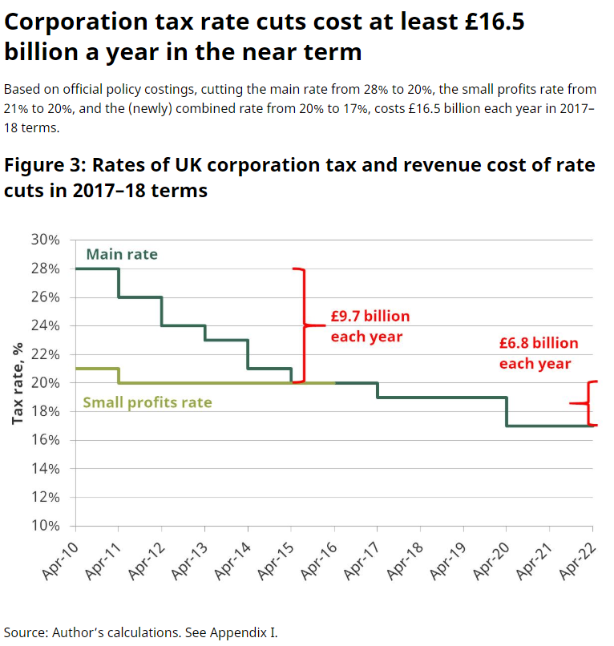

Speaking at the CBI conference yesterday (18 November 2019), prime minister Boris Johnson announced a “fundamental review” into business rates where the burden “will be reduced” if the Conservatives win a majority at the general election on 12 December. This was just one of a number of statements around proposed tax changes under a future Conservative government, including a postponing of the proposed cuts in corporation tax, but does what we have heard mean the Tories are taking a different approach to taxation?
Secretary of State for Business, Energy & Industrial Strategy, Andrea Leadsom, appeared on Radio 4’s Today to trail the announcements, but her contributions, though closer to what could be described as a traditional Conservative view, were different in tone from that which Johnson perhaps surprisingly announced later that day.
Promises of reviews into business rates are increasingly common: both Labour and Conservatives included some form of it in their 2015 and 2017 manifestos, and there were some timid reforms under the coalition government with partial retention of rates in 2013 as well as an attempt at wholesale reform from 2014 onwards, but little came of it through a combination of fear of reform within both the civil service and politicians, and the early 2017 election which caused the local government finance bill to fall. (Disclaimer: I was involved in a number of the committees for that process.)
Leadsom noted that the government had already implemented some significant changes with a £13bn relief package target at the retail sector on the high street, but I would argue tinkering with reliefs is not that significant. Instead, a constant meddling of with reliefs tends to point to a more fundamental problem in the core system, as identified by the Treasury Select Committee’s report in August 2019.
Leadsom continued to make her case for a more fundamental review in the next parliament, citing both the critical source of revenue that business rates provides for the Treasury (c. £30bn p.a.), and the unfairness of high rates on the high street compared with online businesses that need less expensive real estate from which to operate. Nick Robinson asked that, with business rates receipts forming around one-third of local government revenues, how councils would manage the revenue loss, or whether parts of the business community would pay more to close the fiscal gap. Leadsom’s reply was limited to restating a desire to review the entire system.
Previous evidence suggests this is hard, with politics causing at least as many headaches as the technical challenges of reform. The coalition government’s secretary of state for Communities & Local Government, Eric Pickles, said that there was a pearl-handed revolver in his desk for anyone who suggested local government reform, and a fundamental rebuilding of the business rates system from the bottom up would almost certainly require opening the Pandora’s box of local government administration and finance.
But what Leadsom said next was striking. She noted that, since the government had reduced the headline rate of corporation tax from 28% to 19%, there has been an increase in revenue of 45% collected by the exchequer from this tax, implying that this could also be true for business rates. Certainly corporation tax revenues have increased since 2010 when the rate started to be lowered, but this is more likely to be because the country was exiting a heavy recession. Instead, the Institute for Fiscal Studies suggests the lost income from these cuts amounts to billions per year:

Leadsom was clear that she was not saying some business will pay more to help high streets, but it is unclear how this can be the case. The theory behind the cutting of corporation tax that the Conservative’s have clung to is that of the Laffer curve: that tax receipts will be zero at rates of both 0% (none collected) and 100% (that it’s not worth working), and that there is a peak somewhere between the two, and that lowering rates can increase revenue by broadening the base. The theory is heavily contested, but theoretically must, in some form, be true: the real question is where the optimal rate is.
It is not clear, however, that this would apply to business rates, as broadening the base is difficult: it needs either physical construction of property which is only ever marginal to the existing stock, or increasing the base by bringing more small properties back into scope, which is contrary to government policies over the past two decades. Whilst we can argue where the optimal tax rate is for corporation tax, it seems futile for a near unavoidable property tax. Lowering the burden will lower revenues, all other things being equal.
At the CBI conference later in the day, Johnson surprisingly announced that the scheduled cuts in corporation tax (to 17%) were to be postponed. Surprising, because this has been a key aspect of the Conservatives’ tax policy for nearly a decade. Even more surprising was the reason given: to ensure that there was more money to invest in public services.
Why is this so surprising? Because it’s the first time in decades that a Conservative prime minister or chancellor has admitted that tax cuts may depress government tax revenues. It’s an explicit acknowledgement that either they’re now having doubts about the Laffer Curve’s validity, or that they now believe that the UK may already be below the optimal rate. This is a significant change in thinking from this party, and leaves open questions about other policies from previous manifestos, including the level of tax-free personal allowances at both the basic and upper rate thresholds.
Are the Conservatives losing faith in their low-tax model? Or are they just frightened that they can no longer sell it to the public? We’ll have to wait for the next Budget to know for certain.